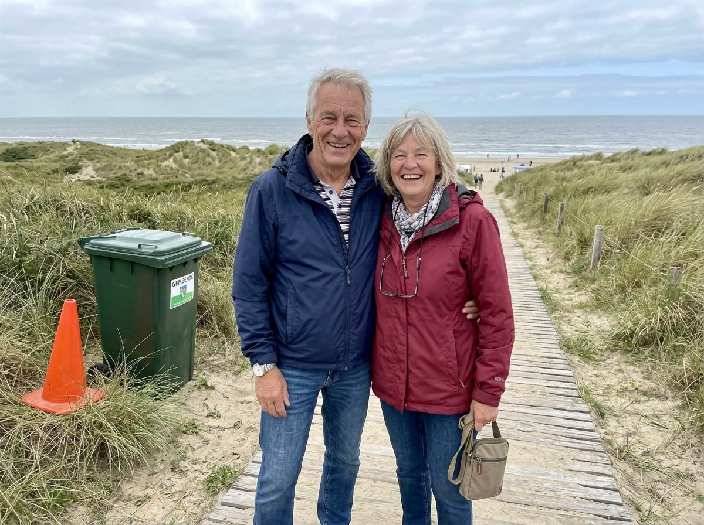
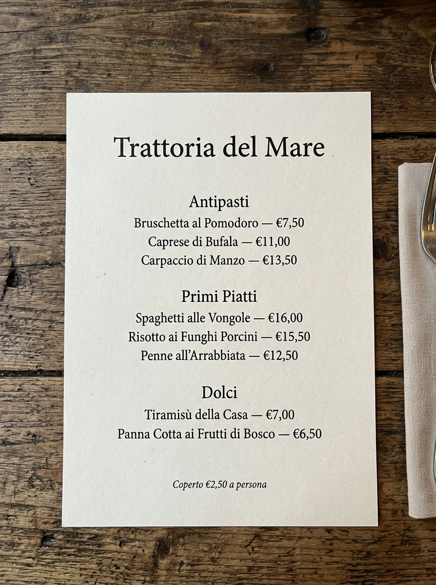
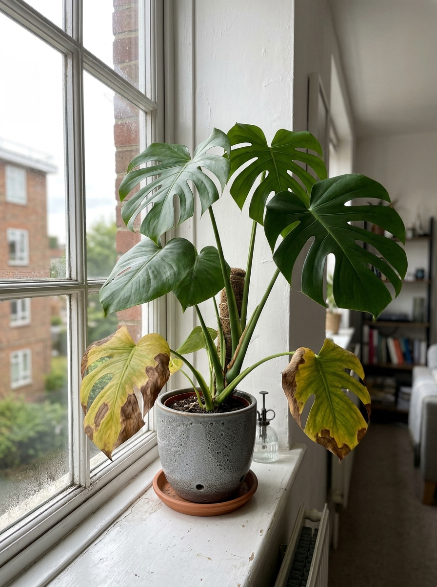

🎨 Zelf Doen • Stap-voor-Stap
Praktijkopdrachten Les 2: Beeld & Vision
Oefen op je eigen tempo met het maken van afbeeldingen, het verbeteren van foto's (mét behoud van gezichten) en het laten meekijken van AI.
👆 Spiekkaart: Hoe zet je een foto in ChatGPT of Google Gemini?
💻 Op een Windows Laptop of MacBook:
1. Klik bij een oefening hieronder op "Download deze oefenfoto" (hij komt dan in je map Downloads te staan).
2. Ga naar ChatGPT of Gemini en klik linksonder in het tekstvak op het Plusje +.
3. Kies "Foto's en bestanden uploaden" en selecteer de foto uit je map Downloads.
📱 Op een iPad of Android Tablet:
1. Tik op "Download deze oefenfoto" (of houd je vinger even op het plaatje en kies 'Zet in Foto's').
2. Ga naar ChatGPT of Gemini, tik onderin op het Plusje + en kies Fotobibliotheek.
3. Tip: Je mag met het Camera-knopje 📷 ook direct een foto maken van iets in het lokaal!
🖌️ Opdracht 1
Beeld Genereren
Geen eigen foto nodig
Een Nieuw Beeld Maken vanuit Tekst (De 4 Bouwstenen)
We laten de chatbot vanuit het niets een afbeelding tekenen. Je merkt direct hoeveel mooier het resultaat wordt als je de 4 simpele bouwstenen gebruikt: 1. Wat zie je + 2. Welke stijl + 3. Welk licht/sfeer + 4. Welk formaat.
Stap A: Maak een schilderij van de Kust bij Den Helder / Texel
Kopieer onderstaande prompt en plak hem in ChatGPT, Google Gemini of Microsoft Copilot:
Maak een afbeelding van een klassieke rode vuurtoren in de duinen van Noord-Holland met wuivend helmgras en een kronkelend zandpad naar de zee.
Stijl: Een sfeervol, handgeschilderd aquarelschilderij met zachte penseelstreken.
Licht & sfeer: Warm gouden avondlicht bij zonsondergang met enkele meeuwen in de lucht.
Vorm: Liggend breedbeeld formaat, zonder tekst in de afbeelding.
Stap B: Stuur nu bij met één korte vervolgzin!
Blijf in hetzelfde chatgesprek en kijk hoe makkelijk je het plaatje aanpast:
Mooi! Maak ditzelfde tafereel nu in de winter bij schemering, met een dun laagje verse sneeuw op de duinen en warm geel licht dat uit het raampje van de vuurtoren schijnt.
Stap C (Optioneel): Een Verjaardagskaart mét Naam erop
Wil je een persoonlijke felicitatiekaart maken voor WhatsApp of om uit te printen? Vervang de naam en leeftijd gerust door iemand die je kent:
Maak een vrolijke, feestelijke illustratie voor een verjaardagskaart. Op een gezellige houten tuintafel staat een versgebakken appeltaart met slagroom, twee kopjes koffie en een boeket veldbloemen. Achter de tafel hangt een slinger met daarop duidelijk leesbaar de tekst: "Gefeliciteerd Sjaan!". Warme, zonnige aquarelstijl.
📸 Opdracht 2
Eigen Foto Bewerken
Gezichten 100% Behouden!
Foto Verbeteren & Dingen Toevoegen (Zonder dat Gezichten Veranderen)
Dit is de oefening naar aanleiding van de vraag van Sjaan: hoe haal je iets lelijks weg van een vakantiefoto, voeg je iets toe én maak je het licht mooier, terwijl de gezichten van de personen op de foto precies hetzelfde blijven?

📥 Stap 1: Pak onze Oefen-Strandfoto (of een eigen foto)
Op deze vakantiefoto staan een groene gemeente-container en een feloranje pion die het uitzicht verpesten, en het weer is een beetje grauw.
⬇️ Download deze Oefenfoto (.jpg)
Stap 2: Upload de foto met het + knopje en plak de 'Gezicht-op-Slot' Prompt
Voeg de gedownloade foto toe in ChatGPT of Google Gemini en plak onderstaande tekst erbij voordat je op verzenden drukt:
Bewerk deze geüploade foto:
1. Verwijder de groene prullenbak en de oranje verkeerspion aan de rechterkant en vervang die plek door natuurlijk duinzand en helmgras.
2. Voeg rechts in de verte op de duintop een kleine rood-witte vuurtoren toe.
3. Verbeter de belichting zodat het zonnig, helder en warm weer lijkt.
BELANGRIJK: Behoud exact de originele gezichten, gelaatstrekken, gezichtsuitdrukking, brillen, kapsels en jassen van de twee personen op de foto. Verander absoluut niets aan de personen zelf.
💡 Extra tip (Het Selectie-Kwastje in ChatGPT): Werk je in ChatGPT? Klik eens op je geüploade foto en kies rechtsboven het Kwastje (Selecteren). Als je alleen over de groene prullenbak veegt en typt "Vervang door duingras", raakt de AI de rest van de foto (en dus de gezichten!) helemaal niet aan.
🍝 Opdracht 3
Kijken met AI (Vision)
Handig op Reis!
'Kijken' met AI: De Italiaanse Menukaart
Op vakantie in het buitenland hoef je nooit meer losse woorden op te zoeken. Maak een foto van de menukaart en laat AI direct vertalen, adviseren en rekenen!

📥 Stap 1: Download de Italiaanse Menukaart
Een foto van de menukaart van Trattoria del Mare met voorgerechten, pasta's/risotto, nagerechten en kleine lettertjes onderaan.
⬇️ Download Oefenfoto Menukaart (.jpg)
Stap 2: Voeg de foto toe met + en stel je vraag
Bekijk deze foto van de Italiaanse menukaart en help mij met 3 dingen:
1. Vertaal alle gerechten en prijzen overzichtelijk naar het Nederlands.
2. Zet een groen vinkje (✅) bij de gerechten die volledig vegetarisch zijn (zonder vlees of vis).
3. Wat betalen wij in totaal als wij met 2 personen allebei de Bruschetta, de Risotto en de Tiramisù bestellen (let ook op de kleine lettertjes onderaan de kaart)?
🌿 Opdracht 4
Kijken met AI (Vision)
In Huis & Tuin
'Kijken' met AI: De Plantendokter
Heb je een plant in de tuin of vensterbank die er niet gelukkig uitziet, of een apparaat waarvan je een knopje niet begrijpt? Stuur een foto en vraag AI om raad.

📥 Stap 1: Download de Foto van de Kamerplant
Deze kamerplant op de vensterbank krijgt onderaan ineens gele bladeren met bruine randjes. Wat is er aan de hand?
⬇️ Download Oefenfoto Kamerplant (.jpg)
Stap 2: Upload de foto met + en vraag een diagnose
Bekijk de foto van mijn kamerplant:
1. Welke plant is dit precies (Nederlandse naam)?
2. Waarom worden de onderste bladeren geel met bruine randjes? Geef de 2 meest waarschijnlijke oorzaken.
3. Geef mij een simpel stappenplan in 3 punten hoe ik deze plant weer gezond krijg en hoe vaak hij water nodig heeft.